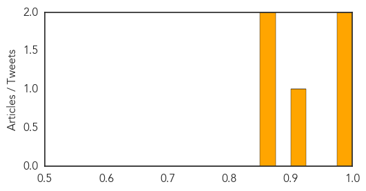
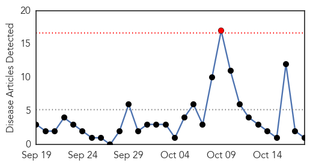
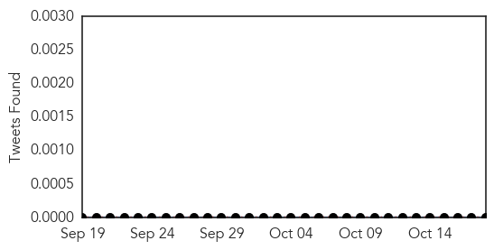
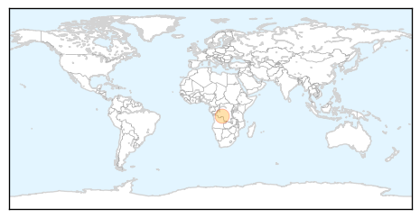

Cholera
30-Day Web Trend
0 alerts, 0 warnings

30-Day Twitter Trend
8 alerts, 0 warnings

Article Locations

Article Confidences
Top Articles:
- 0.994
- Haiti's Earthquake Was Devastating, but the Cholera Epidemic Was Worse
- 0.988
- Justice For Haiti Cholera Victims, Activists Demand UN
- 0.906
- More Than 800 000 Children Mark World Hand Washing Day in Juba > Gurtong Trust > Editorial
- 0.863
- Pope’s Visit: Kagina Demands Speed on Namugongo Road Works
- 0.863
- Kemigisa Fights Gender-based Violence in Tooro
Top Tweets:
-
No tweets found for Oct 18, 2015
Measles
30-Day Web Trend
1 alerts, 0 warnings

30-Day Twitter Trend
0 alerts, 0 warnings

Article Locations
Article Confidences

Top Articles:
Top Tweets:
-
No tweets found for Oct 18, 2015